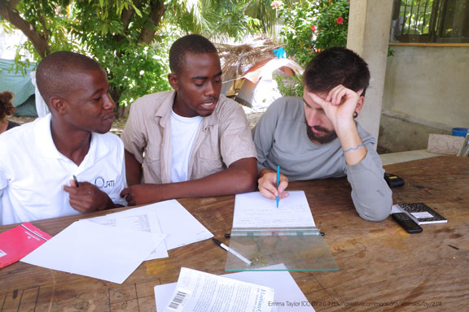

Undergraduate minor | TESL Certificate
English as a Second Language Education
Prepare to teach English in community ESL programs, during study abroad, or after you graduate with programs like JET (Japan Exchange and Teaching), the Peace Corps, or the Fulbright English Teaching Assistants program.
This is not a state licensing program. If you want to teach in K12 schools, see our initial license program.
Application deadlines:
- August 1 for fall
- December 15 for spring
- April 15 for summer

Emma Taylor CC BY

Is this program right for you?
International students
International students already pursuing a full-time academic program at the University of Minnesota are eligible to apply.
This certificate program is not intended for international students needing a visa to study in the U.S.
How it works
Minor or Certificate?
The ESL Minor and TESL Certificate have the same requirements.
If you are a UMN undergraduate student, both the minor and the certificate will appear on your transcript and you will be able to obtain a paper copy of the certificate when you graduate.
If you are a non-degree seeking student, you will not receive the minor.
The minor is generally recognized at U.S. institutions and will prepare you for graduate study.
The certificate is preferable for teaching overseas.
What you'll study
Curriculum
This program will help you become a more effective ESL teacher and can prepare you for further study in second language acquisition at the graduate level. You will learn the structure of English language and best practices for teaching and learning a language in both formal and informal settings.
Curriculum & Requirements [Undergraduate Catalog]
We generally recommend that students take courses in the following order: 3610, 3611W, 3612, 3613, one per semester.
It is, however, possible to take courses concurrently with one exception: the required linguistics course (CI 3610 | LING 3001 | LING 5001) should be completed prior to enrolling in CI 3612 Introduction to Pronunciation and Grammar for ESL Teachers
Prepare to apply
All applicants
A 2.0 GPA minimum is required for admission
- Apply online to declare your intent to enroll in the ESL Minor/TESL Certificate
- Nonnative speakers of English must attain a score of 79 or better on the Test of English as a Foreign Language (TOEFL) as a prerequisite for the minor/certificate.
- Transfer credit is only allowed for LING 3001/5001, with approval from the program director. CI 3611W, CI 3612, and CI 3613 must be taken through the ESL minor program at the University of Minnesota - Twin Cities.
- The program coordinator for the ESL Minor/TESL Certificate will contact you.
Prepare to apply
International applicants | Nonnative English speakers
International applicants may also need:
- TOEFL scores. Official TOEFL scores are required. You may qualify for an exception if you have completed 16 semester or 24 quarter credits within the past 24 months in residence as a full-time student at an accredited institution of higher learning in the United States. UMN TOEFL score requirements and submission guidelines | TOEFL registration and score submission
TOEFL Exemption Policy
Please send an official report of TOEFL, IELTS, or MELAB scores to the Office of Admissions directly from the testing agency (from one set of exam results). The UMN TOEFL institutional code is 6874.
Freshman applicants may be exempt from the total score requirement if they have:
- Scored 430 or greater on the SAT critical reading (verbal) section; or
- Scored 18 or higher on the ACT exam on the English and Reading sections.
Additionally, a student may be exempt from the writing sub score requirement if they have:
- Score greater than 470 on the SAT writing; or
- Scored greater than 20 on the ACT writing
Transfer applicants may be exempt from the total score requirement if they have:
- Successfully completed 26 or more transferable semester credits at a two or four year post-secondary institution in the United States and have completed the full freshman English requirements at that school with a grade of C or better; or
- Successfully completed 60 or more transferable semester credits at a two or four-year postsecondary institution in the United States.